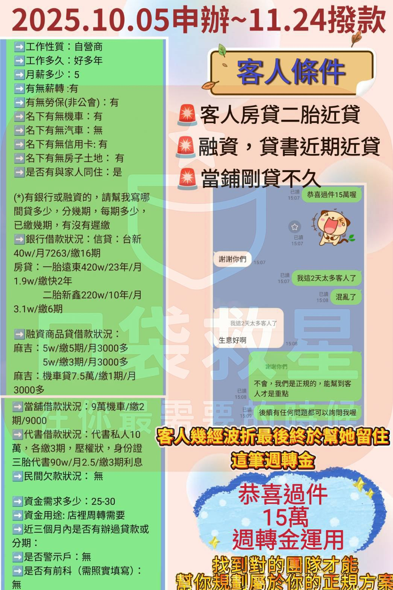

案例 01｜多筆負債狀況下，成功規劃週轉方案
約 50 天完成評估與撥款，協助客戶留住關鍵資金
客戶為自營商，工作年資多年、收入穩定，但名下同時存在房貸、二胎、融資、商品貸、機車貸與代書借款等多筆負債，整體結構複雜，近期因營運需求出現資金週轉壓力。 在正式操作前，我們先完整盤點現有貸款與繳款狀況，釐清風險點與可調整空間，避免在條件尚未釐清前貿然送件，導致紀錄受損。 經過多次評估與方向調整後，成功協助客戶保留這筆重要的週轉資金，讓店面營運得以延續。
★★★★★
「這段時間真的很混亂，還好有人幫我一步一步整理狀況，不會亂叫我送件，最後真的幫我把資金留下來。」
— 客戶回饋